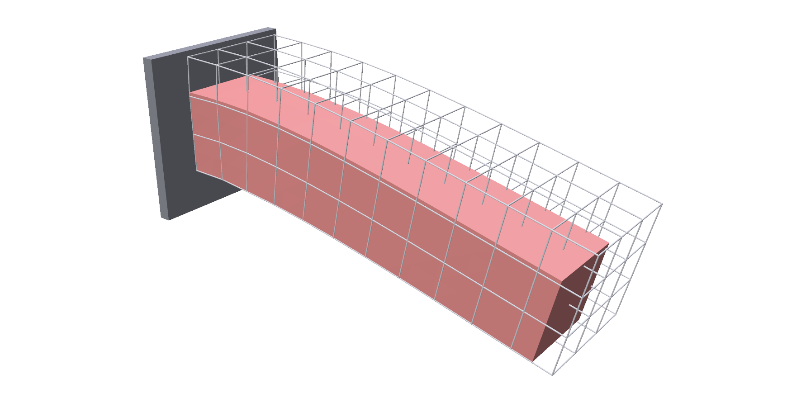
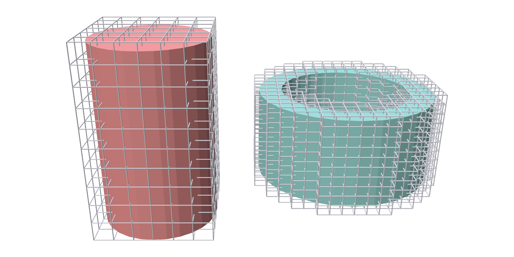
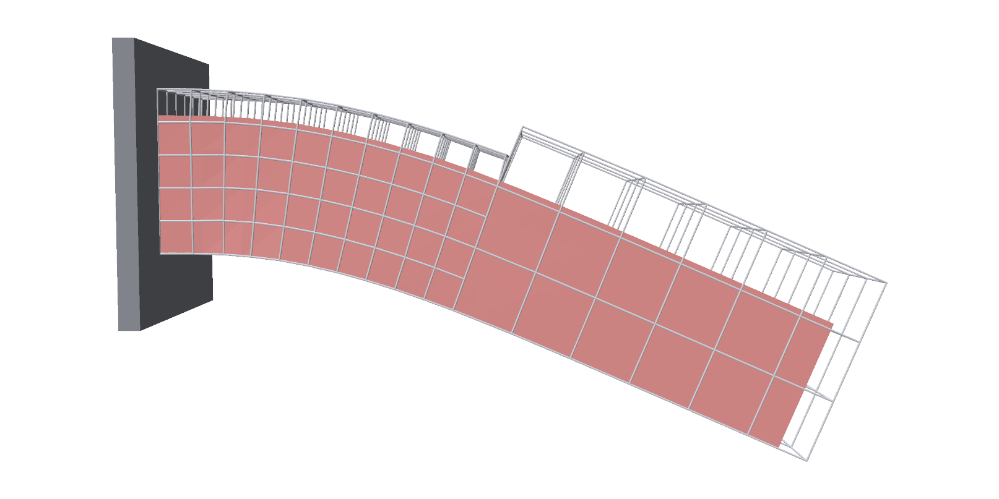
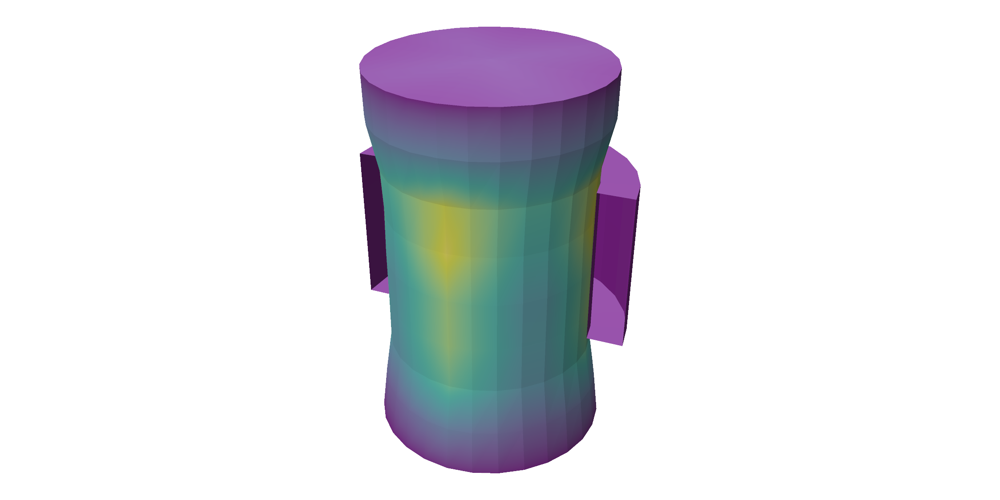

Embedded solids¶
trusty.embedded simulates a solid from a triangle surface alone. The surface
is filled with a regular grid of hexes (voxelized), the hexes carry the
simulation, and the surface rides along inside them. There is no tet meshing
step, and the surface can be far finer than the grid.
Capability: embedded.
Quick example¶
A bar clamped at one end, swinging down under gravity:
world = trusty.World(backend=backend,
timestep=1.0 / 60.0,
newton=trusty.NewtonConfig(max_iters=60, tolerance=1e-4),
time_stepping="bdf2")
# V (n, 3) and F (m, 3): the triangle surface. It is filled with hexes
# of edge voxel_size, which carry the simulation.
body = trusty.embedded.add_embedded_solid(
world, V, F, voxel_size=voxel_size, material=material, density=1000.0,
order=order)
# Clamp the end-cap triangles to their rest positions.
trusty.embedded.attach_weak_pin(
world, body, pin_faces=pin_faces, initial_targets=V.copy(), gamma=gamma)

add_embedded_solid voxelizes the surface and returns the body id. The grey
lines are the hex grid; the red surface is the input mesh, moved by it.
| Argument | Meaning |
|---|---|
V, F |
the surface: vertices (n, 3) and triangles (m, 3), closed and consistently wound |
voxel_size |
hex edge length, in the units of V; see The voxel grid |
material |
any solid material |
density |
kg/m³ |
sizing_field, max_level |
optional local refinement; see Adaptive refinement |
order |
ElementOrder of the hexes, as for solids |
The clamp comes from attach_weak_pin; see Weak pins.
Full script: python examples/embedded/embedded_cantilever.py
"""Voxelized cantilever sagging under gravity.
A triangle-surface mesh (either a procedurally-generated rectangular bar
or one loaded from disk via --mesh) is voxelized, one end weakly pinned
via Nitsche to the rest positions, and the free end sags under gravity.
Usage:
python examples/embedded/embedded_cantilever.py # built-in bar
python examples/embedded/embedded_cantilever.py --mesh bunny.obj # custom mesh
python examples/embedded/embedded_cantilever.py --no-viewer # write PNG frames
python examples/embedded/embedded_cantilever.py --steps 240
python examples/embedded/embedded_cantilever.py --order q2 # quadratic (Q2) elements
"""
from __future__ import annotations
import argparse
import sys
from pathlib import Path
import numpy as np
import trusty
sys.path.insert(0, str(Path(__file__).resolve().parent.parent))
from utils import ( # noqa: E402
init_polyscope,
load_mesh,
make_bar_trimesh,
mean_edge_length,
rescale_mesh,
)
ORDER = trusty.fem.ElementOrder
# CLI order name -> voxel-hex element order (Q1/Q2 Lagrange/Q2 serendipity).
HEX_ORDERS = {
"linear": ORDER.Linear,
"q2": ORDER.Quadratic,
"q2s": ORDER.QuadraticSerendipity,
}
# --- Geometry: a simple axis-aligned bar, 1.0 × 0.2 × 0.2 units -----------
BAR_SIZE = (1.0, 0.2, 0.2)
BAR_FACE_RES = (16, 4, 4) # surface triangulation resolution per dimension
# The voxelizer's hex edge length is derived from the input mesh's average
# surface-edge length multiplied by this factor.
VOXEL_FACTOR = 1.5
# Pin all triangles whose *centroid* sits in the leftmost slice of the
# mesh's x-extent (fraction of (x_max − x_min)). Centroid-based
# selection works for both axis-aligned faces (every centroid coincides
# with x_min) and organic meshes where no single triangle has all three
# vertices in a tight band.
PIN_BAND_FRAC = 5e-2
def pinned_face_indices(V: np.ndarray, F: np.ndarray) -> list[int]:
"""Triangles whose centroid sits in the first `PIN_BAND_FRAC` of the
mesh's x-extent. Works uniformly for axis-aligned faces (every
centroid is exactly at x_min) and organic meshes (no dependence on
vertex-count density)."""
x_min = float(V[:, 0].min())
x_max = float(V[:, 0].max())
band = PIN_BAND_FRAC * (x_max - x_min)
centroids_x = V[F, 0].mean(axis=1)
return np.flatnonzero(centroids_x - x_min < band).astype(int).tolist()
def build_world(
backend: str = "auto",
*,
mesh_path: Path | None = None,
voxel_factor: float = VOXEL_FACTOR,
gamma: float = 20.0,
youngs: float = 2e6,
rescale_to: float | None = None,
order=ORDER.Linear,
):
trusty.check_capabilities("embedded")
if mesh_path is not None:
V, F = load_mesh(mesh_path)
if rescale_to is not None:
V = rescale_mesh(V, rescale_to)
else:
# Always translate so bbox min is at origin (gravity axis = z,
# cantilever axis = x, pin face = -x of bbox).
V = V - V.min(axis=0)
bbox = V.max(axis=0) - V.min(axis=0)
print(f"[mesh] {mesh_path.name} verts={len(V)} tris={len(F)} "
f"bbox_extent={tuple(round(x, 4) for x in bbox)}")
else:
V, F = make_bar_trimesh(BAR_SIZE, BAR_FACE_RES)
bbox = V.max(axis=0) - V.min(axis=0)
pin_faces = pinned_face_indices(V, F)
if not pin_faces:
raise SystemExit(
f"No pinned faces found — mesh has no triangle centroids in "
f"the first {PIN_BAND_FRAC:.1%} of its x-extent "
f"[{V[:, 0].min():.4f}, {V[:, 0].max():.4f}]. "
"Bump PIN_BAND_FRAC in the example source.")
print(f"[pin] {len(pin_faces)} triangles pinned near x_min="
f"{V[:, 0].min():.4f}")
avg_edge = mean_edge_length(V, F)
voxel_size = voxel_factor * avg_edge
print(f"[voxelize] mean_edge={avg_edge:.4f} voxel_size="
f"{voxel_size:.4f} (factor={voxel_factor})")
material = trusty.StableNeoHookean(youngs_modulus=youngs, poisson_ratio=0.4)
world = trusty.World(backend=backend,
timestep=1.0 / 60.0,
newton=trusty.NewtonConfig(max_iters=60, tolerance=1e-4),
time_stepping="bdf2")
# V (n, 3) and F (m, 3): the triangle surface. It is filled with hexes
# of edge voxel_size, which carry the simulation.
body = trusty.embedded.add_embedded_solid(
world, V, F, voxel_size=voxel_size, material=material, density=1000.0,
order=order)
# Clamp the end-cap triangles to their rest positions.
trusty.embedded.attach_weak_pin(
world, body, pin_faces=pin_faces, initial_targets=V.copy(), gamma=gamma)
return world, body, V, F
def _register_visuals(ps, world, body, show_hexes: bool = True):
# The deformed input surface: one row per vertex of V, and its triangles.
V = np.asarray(trusty.embedded.read_embedded_surface(world, body))
F = np.asarray(trusty.embedded.surface_triangles(world, body))
ps_mesh = ps.register_surface_mesh("bar", V, F, smooth_shade=False)
ps_mesh.set_edge_width(1.0)
ps_mesh.set_color((0.85, 0.55, 0.25))
ps_hex = None
if show_hexes:
# The hex grid that carries the simulation, at its current positions.
hex_mesh = trusty.fem.read_mesh(world, body)
ps_hex = ps.register_volume_mesh(
"voxel hexes",
np.asarray(hex_mesh.vertices),
hexes=np.asarray(hex_mesh.hexes))
ps_hex.set_color((0.45, 0.6, 0.85))
ps_hex.set_edge_width(1.0)
ps_hex.set_transparency(0.55)
ps_mesh.set_transparency(0.85)
return ps_mesh, ps_hex
def _update_visuals(ps_mesh, ps_hex, world, body):
ps_mesh.update_vertex_positions(
np.asarray(trusty.embedded.read_embedded_surface(world, body)))
if ps_hex is not None:
ps_hex.update_vertex_positions(
np.asarray(trusty.fem.read_mesh(world, body).vertices))
def run_polyscope(world, body, steps: int, show_hexes: bool = True):
ps = init_polyscope(headless=False)
ps_mesh, ps_hex = _register_visuals(ps, world, body, show_hexes)
state = {"i": 0, "playing": False}
def advance_one():
if state["i"] < steps:
world.step()
state["i"] += 1
_update_visuals(ps_mesh, ps_hex, world, body)
def callback():
import polyscope.imgui as psim
_, state["playing"] = psim.Checkbox("play", state["playing"])
psim.SameLine()
if psim.Button("step"):
advance_one()
elif state["playing"]:
advance_one()
psim.Text(f"step {state['i']} / {steps}")
rep = world.last_report()
psim.Text(f"iters={rep.iterations} res={rep.final_residual:.2e} "
f"{'converged' if rep.converged else 'DIVERGED'}")
ps.set_user_callback(callback)
ps.show()
def run_screenshots(world, body, steps: int, out_dir: Path,
show_hexes: bool = True):
"""Headless: step the world, write a PNG per frame via polyscope EGL."""
ps = init_polyscope(headless=True)
out_dir.mkdir(parents=True, exist_ok=True)
ps_mesh, ps_hex = _register_visuals(ps, world, body, show_hexes)
ps.reset_camera_to_home_view()
ps.look_at(
camera_location=(1.8, -1.2, 0.9),
target=(0.5, 0.1, -0.1),
)
def snapshot(idx: int):
ps.screenshot(str(out_dir / f"embedded_{idx:04d}.png"), transparent_bg=False)
snapshot(0)
for i in range(1, steps + 1):
world.step()
_update_visuals(ps_mesh, ps_hex, world, body)
snapshot(i)
rep = world.last_report()
print(f"Wrote {steps + 1} screenshots to {out_dir}/")
print(f"Last solve: iters={rep.iterations} "
f"residual={rep.final_residual:.3e} "
f"{'converged' if rep.converged else 'DIVERGED'}")
def main():
parser = argparse.ArgumentParser(description=__doc__.split("\n")[0])
parser.add_argument("--backend",
choices=["auto", "cpu", "cuda", "accelerate"], default="auto")
parser.add_argument("--order", choices=list(HEX_ORDERS), default="linear",
help="element order: q1 linear (default), q2 Lagrange, q2s serendipity")
parser.add_argument("--steps", type=int, default=120)
parser.add_argument("--no-viewer", action="store_true")
parser.add_argument("--mesh", type=Path, default=None,
help="Load this triangle mesh instead of the "
"built-in bar. Any format trimesh reads "
"(.obj, .ply, .stl, .glb, …).")
parser.add_argument("--voxel-factor", type=float, default=VOXEL_FACTOR,
help=f"Hex edge length as a multiple of the mesh's "
f"mean surface-edge length (default "
f"{VOXEL_FACTOR}).")
parser.add_argument("--gamma", type=float, default=20.0,
help="Nitsche dimensionless stabilization "
"parameter.")
parser.add_argument("--youngs", type=float, default=2e6,
help="Young's modulus (Pa) for StableNeoHookean.")
parser.add_argument("--rescale-to", type=float, default=None,
help="Rescale the loaded mesh so its longest axis "
"spans this many world units. Ignored when "
"using the built-in bar.")
parser.add_argument("--out", type=Path, default=Path("out_embedded"))
parser.add_argument("--no-hexes", action="store_true",
help="Disable the voxel-hex overlay; show only the "
"embedded surface.")
args = parser.parse_args()
order = HEX_ORDERS[args.order]
world, body, _V, _F = build_world(
backend=args.backend,
mesh_path=args.mesh,
voxel_factor=args.voxel_factor,
gamma=args.gamma,
youngs=args.youngs,
rescale_to=args.rescale_to,
order=order,
)
# Quadratic embedded bodies have no linear voxel-hex mesh to read back;
# only the prolongation surface renders.
show_hexes = not args.no_hexes
if show_hexes and order != ORDER.Linear:
print("[viewer] hex overlay unavailable for quadratic elements; "
"showing embedded surface only.")
show_hexes = False
if args.no_viewer:
run_screenshots(world, body, args.steps, args.out,
show_hexes=show_hexes)
else:
run_polyscope(world, body, args.steps,
show_hexes=show_hexes)
if __name__ == "__main__":
main()
The voxel grid¶
Every hex that overlaps the inside of the surface becomes an element, so the
grid always covers the surface and usually sticks out past it. voxel_size
is the one resolution knob: smaller hexes follow the shape more closely and
cost more. The surface keeps its own resolution either way.
Pick voxel_size from the thinnest feature you need, not from the triangles.
A wall needs at least two cells through its thickness, or the voxels bridge
the gap and the hole disappears:
# Voxel edges are set in absolute terms, not from the input triangle size.
# `add_embedded_solid` fills the inside of the surface with hexes, so a
# thin-walled tube needs at least ~2 cells THROUGH the wall; coarser, and it
# voxelizes into a solid blob spanning the bore.
VOXEL_CORE = CORE_RADIUS / 3.0
VOXEL_SLEEVE = SLEEVE_WALL / 2.0
A solid cylinder and a thin tube, each inside its grid. The tube keeps its bore because its hexes are half as wide as its wall:

Adaptive refinement¶
To spend resolution only where it matters, pass a sizing_field: a function
from a world point p (a length-3 array) to the hex edge length wanted
there. voxel_size is then the coarsest edge, and max_level is how many
times a hex may be halved, so the finest edge is
voxel_size / 2**max_level.
coarse = voxel_factor * mean_edge_length(V, F)
fine = coarse / (2 ** max_level)
# Refine the band nearest the clamped root; coarse elsewhere.
x_min = float(V[:, 0].min())
x_ext = float(V[:, 0].max()) - x_min
# Target hex edge length at world point p: fine near the root.
def sizing(p, x_min=x_min, x_ext=x_ext, fine=fine, coarse=coarse):
return fine if (p[0] - x_min) < REFINE_BAND_FRAC * x_ext else coarse
body = trusty.embedded.add_embedded_solid(
world, V, F, voxel_size=coarse, material=material, density=1000.0,
sizing_field=sizing, max_level=max_level)
Here the cantilever is refined near its root, where the bending is largest, and stays coarse toward the tip:

Where fine hexes meet coarse ones, the fine nodes are made to follow their coarse neighbours, so the grid stays conforming.
Full script: python examples/embedded/adaptive_embedded_cantilever.py
"""Adaptively-voxelized cantilever sagging under gravity.
Same setup as `embedded_cantilever.py`, but the hex grid is refined near the
clamped root -- where a cantilever's bending stress concentrates -- via a
sizing field. `--voxel-factor` sets the *coarsest* cell; the tip stays coarse.
Refinement introduces T-junction hanging nodes, which the solver constrains
to follow their coarser neighbours.
The Nitsche weak pin is a surface energy (not a hard hex-node pin), so hanging
nodes near the root are fine.
Usage:
python examples/embedded/adaptive_embedded_cantilever.py
python examples/embedded/adaptive_embedded_cantilever.py --max-level 2
python examples/embedded/adaptive_embedded_cantilever.py --no-viewer
"""
from __future__ import annotations
import argparse
import sys
from pathlib import Path
import numpy as np
import trusty
sys.path.insert(0, str(Path(__file__).resolve().parent.parent))
from utils import ( # noqa: E402
load_mesh,
make_bar_trimesh,
mean_edge_length,
rescale_mesh,
)
# Reuse the geometry constants, pin selection, and viewer/screenshot drivers.
from embedded_cantilever import ( # noqa: E402
BAR_FACE_RES,
BAR_SIZE,
VOXEL_FACTOR,
pinned_face_indices,
run_polyscope,
run_screenshots,
)
# Fraction of the x-extent (from the clamped root) refined to the finest level.
REFINE_BAND_FRAC = 0.4
def build_world(
backend: str = "auto",
*,
mesh_path: Path | None = None,
voxel_factor: float = VOXEL_FACTOR,
max_level: int = 1,
gamma: float = 20.0,
youngs: float = 2e6,
rescale_to: float | None = None,
):
trusty.check_capabilities("embedded")
if mesh_path is not None:
V, F = load_mesh(mesh_path)
V = rescale_mesh(V, rescale_to) if rescale_to is not None else V - V.min(axis=0)
print(f"[mesh] {mesh_path.name} verts={len(V)} tris={len(F)}")
else:
V, F = make_bar_trimesh(BAR_SIZE, BAR_FACE_RES)
pin_faces = pinned_face_indices(V, F)
if not pin_faces:
raise SystemExit("No pinned faces found near x_min; bump PIN_BAND_FRAC.")
coarse = voxel_factor * mean_edge_length(V, F)
fine = coarse / (2 ** max_level)
# Refine the band nearest the clamped root; coarse elsewhere.
x_min = float(V[:, 0].min())
x_ext = float(V[:, 0].max()) - x_min
# Target hex edge length at world point p: fine near the root.
def sizing(p, x_min=x_min, x_ext=x_ext, fine=fine, coarse=coarse):
return fine if (p[0] - x_min) < REFINE_BAND_FRAC * x_ext else coarse
material = trusty.StableNeoHookean(youngs_modulus=youngs, poisson_ratio=0.4)
world = trusty.World(backend=backend,
timestep=1.0 / 60.0,
newton=trusty.NewtonConfig(max_iters=60, tolerance=1e-4),
time_stepping="bdf2")
body = trusty.embedded.add_embedded_solid(
world, V, F, voxel_size=coarse, material=material, density=1000.0,
sizing_field=sizing, max_level=max_level)
n_nodes = np.asarray(trusty.fem.read_mesh(world, body).vertices).shape[0]
print(f"[voxelize] coarse={coarse:.4f} finest={fine:.4f} "
f"(max_level={max_level}) {n_nodes} hex nodes")
trusty.embedded.attach_weak_pin(
world, body, pin_faces=pin_faces, initial_targets=V.copy(), gamma=gamma)
return world, body, V, F
def main():
parser = argparse.ArgumentParser(description=__doc__.split("\n")[0])
parser.add_argument("--backend",
choices=["auto", "cpu", "cuda", "accelerate"], default="auto")
parser.add_argument("--steps", type=int, default=120)
parser.add_argument("--no-viewer", action="store_true")
parser.add_argument("--mesh", type=Path, default=None)
parser.add_argument("--voxel-factor", type=float, default=VOXEL_FACTOR,
help="Coarsest hex edge as a multiple of the mesh's "
"mean surface-edge length.")
parser.add_argument("--max-level", type=int, default=1,
help="Refinement depth near the root (finest = "
"coarsest / 2^max_level).")
parser.add_argument("--gamma", type=float, default=20.0)
parser.add_argument("--youngs", type=float, default=2e6)
parser.add_argument("--rescale-to", type=float, default=None)
parser.add_argument("--out", type=Path, default=Path("out_adaptive_embedded"))
parser.add_argument("--no-hexes", action="store_true")
args = parser.parse_args()
world, body, _V, _F = build_world(
backend=args.backend,
mesh_path=args.mesh,
voxel_factor=args.voxel_factor,
max_level=args.max_level,
gamma=args.gamma,
youngs=args.youngs,
rescale_to=args.rescale_to,
)
if args.no_viewer:
run_screenshots(world, body, args.steps, args.out,
show_hexes=not args.no_hexes)
else:
run_polyscope(world, body, args.steps, show_hexes=not args.no_hexes)
if __name__ == "__main__":
main()
Weak pins¶
Pins on an embedded solid act on the surface, not on hex nodes: a weak pin pulls chosen triangles of the input mesh toward target positions. It works the same on any grid, refined or not, and the pinned triangles need not line up with hex faces.
x_min = float(V[:, 0].min())
x_max = float(V[:, 0].max())
band = PIN_BAND_FRAC * (x_max - x_min)
centroids_x = V[F, 0].mean(axis=1)
return np.flatnonzero(centroids_x - x_min < band).astype(int).tolist()
attach_weak_pin(world, body, pin_faces, initial_targets, gamma=10.0) then
pins those triangles, as in the quick example.
| Argument | Meaning |
|---|---|
pin_faces |
indices into F of the triangles to pin |
initial_targets |
target positions, one row per vertex of V: (n, 3). Rows of unpinned vertices are ignored. |
gamma |
pin stiffness. Higher tracks the targets more tightly. |
A body has one weak pin. To hold several patches, pass all their triangles in one call and give each its own targets.
Moving targets¶
set_pin_targets(world, body, targets) replaces the targets, again one row
per vertex of V; it takes effect on the next step. Here both ends of a beam
are pinned in one call: the left end stays at rest, and the right end's
targets follow a sine wave:
phase = (2 * np.pi * step) / DRIVE_PERIOD_STEPS
dz = DRIVE_AMP * np.sin(phase)
targets = V_rest.copy() # one row per surface vertex
targets[right_verts, 2] += dz
return targets, dz
Each step, set the new targets, then step:
targets, _dz = prescribed_targets(i, V, right_verts)
trusty.embedded.set_pin_targets(world, body, targets)
world.step()
The orange points are the right end's targets.
Full script: python examples/embedded/moving_nitsche.py
"""Cantilever beam with a moving Nitsche pin at the free end.
A high-res rectangular bar is voxelized, the left face Nitsche-pinned
at rest, and the right face Nitsche-pinned to a target that follows a
vertical sinusoid. The beam bends elastically as the right end is
driven up and down.
Defaults open a polyscope viewer; ``--no-viewer`` writes PNG frames
instead.
Usage:
python examples/embedded/moving_nitsche.py
python examples/embedded/moving_nitsche.py --steps 360
python examples/embedded/moving_nitsche.py --no-viewer
"""
from __future__ import annotations
import argparse
import sys
from pathlib import Path
import numpy as np
import trusty
sys.path.insert(0, str(Path(__file__).resolve().parent.parent))
from utils import init_polyscope, make_bar_trimesh, mean_edge_length # noqa: E402
# --- Geometry & drive --------------------------------------------------
BAR_SIZE = (1.0, 0.2, 0.2)
BAR_FACE_RES = (16, 4, 4) # surface triangulation per dimension
VOXEL_FACTOR = 1.5 # hex edge ≈ VOXEL_FACTOR * mean tri edge
GAMMA = 50.0
DRIVE_AMP = 0.30
DRIVE_PERIOD_STEPS = 60
# Centroid x-band (fraction of x-extent) within which a triangle is
# considered to lie on the corresponding end face.
PIN_BAND_FRAC = 5e-2
def _end_face_indices(V: np.ndarray, F: np.ndarray):
"""Return (left_face_tris, right_face_tris) — triangle indices into
F whose centroid sits in the leftmost/rightmost band of x-extent."""
x_min = float(V[:, 0].min())
x_max = float(V[:, 0].max())
band = PIN_BAND_FRAC * (x_max - x_min)
cx = V[F, 0].mean(axis=1)
left = np.flatnonzero(cx - x_min < band).astype(int).tolist()
right = np.flatnonzero(x_max - cx < band).astype(int).tolist()
return left, right
def _right_face_verts(V: np.ndarray, F: np.ndarray, right_faces):
"""Indices into V that participate in any right-face triangle."""
return sorted({int(v) for f in right_faces for v in F[f]})
def build_world(backend: str):
trusty.check_capabilities("embedded")
V, F = make_bar_trimesh(BAR_SIZE, BAR_FACE_RES)
left_faces, right_faces = _end_face_indices(V, F)
right_verts = _right_face_verts(V, F, right_faces)
if not left_faces or not right_faces:
raise SystemExit(
"moving_nitsche: failed to identify both end-face triangle "
"groups — bump PIN_BAND_FRAC or increase BAR_FACE_RES.")
avg_edge = mean_edge_length(V, F)
voxel_size = VOXEL_FACTOR * avg_edge
world = trusty.World(backend=backend,
timestep=1.0 / 60.0,
gravity=(0.0, 0.0, 0.0),
newton=trusty.NewtonConfig(max_iters=80, tolerance=1e-6))
mat = trusty.StableNeoHookean(youngs_modulus=2e6, poisson_ratio=0.4)
body = trusty.embedded.add_embedded_solid(
world, V, F, voxel_size=voxel_size, material=mat, density=1000.0)
trusty.embedded.attach_weak_pin(
world, body,
pin_faces=left_faces + right_faces,
initial_targets=V.copy(),
gamma=GAMMA)
print(f"[moving_nitsche] bar={BAR_SIZE} surface_verts={len(V)} "
f"surface_tris={len(F)} voxel_size={voxel_size:.4f} "
f"left_pinned={len(left_faces)} tris "
f"right_pinned={len(right_faces)} tris")
return world, body, V, F, right_verts
def prescribed_targets(step: int, V_rest: np.ndarray, right_verts):
"""Hold all surface verts at rest, except the right-face verts —
those get pulled up/down along z by a sinusoid."""
phase = (2 * np.pi * step) / DRIVE_PERIOD_STEPS
dz = DRIVE_AMP * np.sin(phase)
targets = V_rest.copy() # one row per surface vertex
targets[right_verts, 2] += dz
return targets, dz
def _register_visuals(ps, world, body, F, V, right_verts):
surf = np.asarray(trusty.embedded.read_embedded_surface(world, body)).copy()
ps_mesh = ps.register_surface_mesh("beam", surf, F, smooth_shade=False)
ps_mesh.set_color((0.85, 0.55, 0.25))
ps_mesh.set_edge_width(1.0)
ps_target = ps.register_point_cloud(
"right_targets", V[right_verts].copy(), radius=0.018,
color=(1.0, 0.4, 0.2))
return ps_mesh, ps_target
def run_polyscope(backend: str, n_steps: int):
ps = init_polyscope(headless=False)
world, body, V, F, right_verts = build_world(backend)
ps_mesh, ps_target = _register_visuals(ps, world, body, F, V, right_verts)
state = {"i": 0, "playing": True}
def callback():
import polyscope.imgui as psim
_, state["playing"] = psim.Checkbox("play", state["playing"])
psim.SameLine()
if psim.Button("step") or state["playing"]:
if state["i"] < n_steps:
targets, _dz = prescribed_targets(state["i"], V, right_verts)
trusty.embedded.set_pin_targets(world, body, targets)
world.step()
state["i"] += 1
ps_mesh.update_vertex_positions(np.asarray(
trusty.embedded.read_embedded_surface(world, body)))
ps_target.update_point_positions(targets[right_verts])
psim.Text(f"step {state['i']} / {n_steps}")
rep = world.last_report()
psim.Text(
f"last solve: iters={rep.iterations} "
f"residual={rep.final_residual:.3e} "
f"{'converged' if rep.converged else 'DIVERGED'}")
ps.set_user_callback(callback)
ps.show()
def run_screenshots(backend: str, n_steps: int, out_dir: Path):
ps = init_polyscope(headless=True)
out_dir.mkdir(parents=True, exist_ok=True)
world, body, V, F, right_verts = build_world(backend)
ps_mesh, ps_target = _register_visuals(ps, world, body, F, V, right_verts)
Lx = BAR_SIZE[0]
ps.reset_camera_to_home_view()
ps.look_at(camera_location=(0.5 * Lx, -2.0, 0.5),
target=(0.5 * Lx, 0.0, 0.0))
def snapshot(idx: int):
ps.screenshot(str(out_dir / f"moving_nitsche_{idx:04d}.png"),
transparent_bg=False)
snapshot(0)
last_residual = float("nan")
for i in range(n_steps):
targets, _dz = prescribed_targets(i, V, right_verts)
trusty.embedded.set_pin_targets(world, body, targets)
world.step()
last_residual = world.last_report().final_residual
ps_mesh.update_vertex_positions(np.asarray(
trusty.embedded.read_embedded_surface(world, body)))
ps_target.update_point_positions(targets[right_verts])
snapshot(i + 1)
print(f"Wrote {n_steps + 1} screenshots to {out_dir}/")
print(f"Last residual: {last_residual:.3e}")
def main():
ap = argparse.ArgumentParser(description=__doc__.split("\n")[0])
ap.add_argument("--backend",
choices=["auto", "cpu", "cuda", "accelerate"], default="auto")
ap.add_argument("--steps", type=int, default=180)
ap.add_argument("--no-viewer", action="store_true")
ap.add_argument("--out", type=Path, default=Path("out_moving_nitsche"),
help="Directory to write PNG frames in --no-viewer mode.")
args = ap.parse_args()
if args.no_viewer:
run_screenshots(args.backend, args.steps, args.out)
else:
run_polyscope(args.backend, args.steps)
if __name__ == "__main__":
main()
Releasing a pin¶
detach_weak_pin(world, body) switches the pin off from the next step, and
the pinned triangles become a free boundary. It is one-way.
pin_detached(world, body) reports whether that has happened:
if state["i"] == args.release_at and not trusty.embedded.pin_detached(world, core):
trusty.embedded.detach_weak_pin(world, core) # free from the next step
print(f"[step {state['i']:4d}] weak pin detached -- free boundary")
| Function | Does |
|---|---|
attach_weak_pin(world, body, pin_faces, initial_targets, gamma) |
pin triangles of the surface to targets |
set_pin_targets(world, body, targets) |
move the targets, (n, 3) |
pin_targets(world, body) |
the current targets, (n, 3) |
detach_weak_pin(world, body) |
release the pin for good |
pin_detached(world, body) |
whether the pin has been released |
Reading results¶
Read the surface, not the grid: read_embedded_surface returns the current
position of every vertex of V, in the same order, and surface_triangles
its triangles.
# The deformed input surface: one row per vertex of V, and its triangles.
V = np.asarray(trusty.embedded.read_embedded_surface(world, body))
F = np.asarray(trusty.embedded.surface_triangles(world, body))
The hex grid is still an ordinary solid underneath, so
trusty.fem readouts such as
read_von_mises and read_strain_energy_density work on it and return one
value per hex node. prolong_nodal_field carries such a field over to the
surface, one value per vertex of V:
# One value per hex node ...
nodal = trusty.fem.read_strain_energy_density(world, body,
unit_material=True)
# ... interpolated to one value per vertex of the input surface.
return trusty.embedded.prolong_nodal_field(world, body, nodal)
Below, an undersized stiff sleeve has been press-fitted onto a soft core (the sleeve's near half is cut away). Both surfaces are coloured by strain energy density: the core is squeezed into a waist where the sleeve grips it, and the sleeve itself barely deforms.

| Function | Returns |
|---|---|
read_embedded_surface(world, body) |
current surface vertex positions, (n, 3), rows matching V |
surface_triangles(world, body) |
the surface triangles, (m, 3) |
prolong_nodal_field(world, body, nodal) |
a per-hex-node scalar field, per surface vertex, (n,) |
trusty.fem.read_mesh(world, body) |
the hex grid as a HexMesh, at its current positions |
Full script: python examples/embedded/interference_fit.py
"""Press-fit: a stiff sleeve relaxing onto an undersized soft core.
Two embedded solids in body-body IPC contact. The sleeve's bore is *smaller*
than the core, so seating it directly would start interpenetrating -- and IPC
needs a non-penetrating start. Instead the sleeve is inflated off its rest
shape with `fem.apply_affine_transform(...)`: current
positions scale up, rest does not. It therefore begins contact-free but
strained, and quasi-static relaxation pulls it back toward its unchanged rest,
gripping the core through contact and friction.
That inflate-then-relax trick is the general way to set up an interference fit
without ever authoring a penetrating state.
The core's top cap is held by a Nitsche weak pin (a surface energy, so it acts
on the smooth input surface rather than hex nodes). `--release-at` detaches it
mid-run via `embedded.detach_weak_pin`, leaving a free boundary from that step
on, so you can watch the assembly settle unconstrained.
Readouts come back on the *input* surface, not the hex grid: strain energy
density is computed per node and pushed through each body's prolongation with
`embedded.prolong_nodal_field`.
Usage:
python examples/embedded/interference_fit.py
python examples/embedded/interference_fit.py --no-viewer --steps 120
python examples/embedded/interference_fit.py --interference 0.15
python examples/embedded/interference_fit.py --release-at 60
python examples/embedded/interference_fit.py --backend accelerate
"""
from __future__ import annotations
import argparse
import sys
from pathlib import Path
import numpy as np
import trusty
sys.path.insert(0, str(Path(__file__).resolve().parent.parent))
from utils import init_polyscope # noqa: E402
# Geometry (meters). The core is a capsule-ish cylinder; the sleeve is an
# open-ended tube whose bore is `interference` smaller than the core radius.
CORE_RADIUS = 0.05
CORE_HEIGHT = 0.16
SLEEVE_LENGTH = 0.07
SLEEVE_WALL = 0.016
# Voxel edges are set in absolute terms, not from the input triangle size.
# `add_embedded_solid` fills the inside of the surface with hexes, so a
# thin-walled tube needs at least ~2 cells THROUGH the wall; coarser, and it
# voxelizes into a solid blob spanning the bore.
VOXEL_CORE = CORE_RADIUS / 3.0
VOXEL_SLEEVE = SLEEVE_WALL / 2.0
# Soft core, stiff sleeve -- the sleeve should behave near-rigidly against it
# while staying well conditioned for the solver.
CORE_E, CORE_NU, CORE_RHO = 3.0e5, 0.35, 1.0e3
SLEEVE_E, SLEEVE_NU, SLEEVE_RHO = 8.0e7, 0.30, 9.0e2
# Both bodies are sampled on the same angular stations, so their radii can be
# compared station by station (see `fit_radii`).
N_THETA = 28
PIN_TOP_FRAC = 0.15 # fraction of the core's height held by the weak pin
PIN_GAMMA = 40.0
DHAT = 2.0e-4
KAPPA = 1.0e6
MU = 0.2
def cylinder_trimesh(radius, height, n_theta=N_THETA, n_z=8, z0=0.0):
"""Closed cylinder (side + both caps) as a triangle soup, axis = +z."""
th = np.linspace(0.0, 2.0 * np.pi, n_theta, endpoint=False)
zs = np.linspace(z0, z0 + height, n_z + 1)
ring = np.stack([radius * np.cos(th), radius * np.sin(th)], axis=1)
V = [np.column_stack([np.tile(ring, (len(zs), 1)),
np.repeat(zs, n_theta)])]
V.append(np.array([[0.0, 0.0, zs[0]], [0.0, 0.0, zs[-1]]]))
V = np.vstack(V)
bot_c, top_c = len(V) - 2, len(V) - 1
F = []
for k in range(len(zs) - 1): # side quads -> 2 tris
a, b = k * n_theta, (k + 1) * n_theta
for i in range(n_theta):
j = (i + 1) % n_theta
F.append([a + i, a + j, b + j])
F.append([a + i, b + j, b + i])
for i in range(n_theta): # caps (outward winding)
j = (i + 1) % n_theta
F.append([bot_c, j, i])
F.append([top_c, (len(zs) - 1) * n_theta + i,
(len(zs) - 1) * n_theta + j])
return V, np.asarray(F, dtype=np.int32)
def tube_trimesh(r_inner, wall, length, n_theta=N_THETA, n_z=4, z0=0.0):
"""Open-ended tube (inner + outer walls, annular end caps), axis = +z."""
th = np.linspace(0.0, 2.0 * np.pi, n_theta, endpoint=False)
zs = np.linspace(z0, z0 + length, n_z + 1)
c, s = np.cos(th), np.sin(th)
def shell(radius):
ring = np.stack([radius * c, radius * s], axis=1)
return np.column_stack([np.tile(ring, (len(zs), 1)),
np.repeat(zs, n_theta)])
n_shell = len(zs) * n_theta
V = np.vstack([shell(r_inner), shell(r_inner + wall)])
F = []
for k in range(len(zs) - 1):
a, b = k * n_theta, (k + 1) * n_theta
for i in range(n_theta):
j = (i + 1) % n_theta
# Inner wall faces inward (reversed), outer faces outward.
F.append([a + i, b + j, a + j])
F.append([a + i, b + i, b + j])
oa, ob = a + n_shell, b + n_shell
F.append([oa + i, oa + j, ob + j])
F.append([oa + i, ob + j, ob + i])
for i in range(n_theta): # annular caps
j = (i + 1) % n_theta
lo_i, lo_j = i, j
F.append([lo_i, lo_j, lo_j + n_shell])
F.append([lo_i, lo_j + n_shell, lo_i + n_shell])
hi = (len(zs) - 1) * n_theta
F.append([hi + i, hi + j + n_shell, hi + j])
F.append([hi + i, hi + i + n_shell, hi + j + n_shell])
return V, np.asarray(F, dtype=np.int32)
def build_world(args):
trusty.check_capabilities("embedded", "contact")
V_core, F_core = cylinder_trimesh(CORE_RADIUS, CORE_HEIGHT)
# Bore is undersized by `interference` (a fraction of the core radius), so
# at rest the sleeve cannot be placed around the core without overlap.
r_bore = CORE_RADIUS * (1.0 - args.interference)
z_sleeve = 0.5 * (CORE_HEIGHT - SLEEVE_LENGTH)
V_slv, F_slv = tube_trimesh(r_bore, SLEEVE_WALL, SLEEVE_LENGTH, z0=z_sleeve)
world = trusty.World(backend=args.backend,
timestep=1.0 / 100.0,
gravity=(0.0, 0.0, 0.0),
time_stepping="quasi_static",
newton=trusty.NewtonConfig(max_iters=args.newton_iters, tolerance=1e-4))
trusty.contact.enable(world, trusty.contact.Config(dhat=DHAT, kappa=KAPPA))
core_mat = trusty.StableNeoHookean(youngs_modulus=CORE_E, poisson_ratio=CORE_NU)
slv_mat = trusty.StableNeoHookean(youngs_modulus=SLEEVE_E, poisson_ratio=SLEEVE_NU)
core = trusty.embedded.add_embedded_solid(
world, V_core, F_core, voxel_size=VOXEL_CORE,
material=core_mat, density=CORE_RHO, friction_mu=MU)
sleeve = trusty.embedded.add_embedded_solid(
world, V_slv, F_slv, voxel_size=VOXEL_SLEEVE,
material=slv_mat, density=SLEEVE_RHO, friction_mu=MU)
# Hold the core's top cap so the assembly has something to react against.
z_hi = V_core[:, 2].max() - PIN_TOP_FRAC * CORE_HEIGHT
pin_faces = [int(f) for f in range(len(F_core))
if V_core[F_core[f]][:, 2].min() >= z_hi]
trusty.embedded.attach_weak_pin(
world, core, pin_faces=pin_faces, initial_targets=V_core.copy(),
gamma=PIN_GAMMA)
# Inflate the sleeve off its rest shape so it starts clear of the core:
# current positions scale radially, rest positions do not. The relaxation
# then drives it back onto that (unchanged) undersized rest.
clearance = (CORE_RADIUS + 2.0 * args.clearance_margin) / r_bore
A = np.diag([clearance, clearance, 1.0])
trusty.fem.apply_affine_transform(world, sleeve, A, (0.0, 0.0, 0.0))
print(f"[setup] core {len(V_core)} verts / sleeve {len(V_slv)} verts "
f"interference={args.interference:.0%} inflate={clearance:.3f}x "
f"pinned {len(pin_faces)} core faces")
return world, core, sleeve
def surface_energy(world, body):
"""Strain energy density (unit material) on the body's input surface."""
# One value per hex node ...
nodal = trusty.fem.read_strain_energy_density(world, body,
unit_material=True)
# ... interpolated to one value per vertex of the input surface.
return trusty.embedded.prolong_nodal_field(world, body, nodal)
def fit_radii(world, core, sleeve):
"""(core radius, sleeve-bore radius) at the tightest angular station.
Their difference is the live contact gap: it must stay >= 0, since IPC
never lets the two surfaces cross.
Compared station by station rather than globally. Both bodies are faceted
surfaces of revolution, so a global max core radius against a global min
bore radius differences one polygon's circumradius against another's
inradius. That bias is R * (1 - cos(pi / N_THETA)) per body -- several
millimetres here, an order of magnitude more than the clearance being
measured, and it reports a crossing when the surfaces are still millimetres
apart.
"""
Vc = np.asarray(trusty.embedded.read_embedded_surface(world, core))
Vs = np.asarray(trusty.embedded.read_embedded_surface(world, sleeve))
band = (Vc[:, 2] > Vs[:, 2].min()) & (Vc[:, 2] < Vs[:, 2].max())
if not band.any():
return float("nan"), float("nan")
def station(V):
return np.rint(np.arctan2(V[:, 1], V[:, 0])
/ (2.0 * np.pi / N_THETA)).astype(int) % N_THETA
r_core = np.linalg.norm(Vc[band, :2], axis=1)
r_bore = np.linalg.norm(Vs[:, :2], axis=1)
s_core, s_bore = station(Vc[band]), station(Vs)
tightest = (float("nan"), float("nan"))
worst = -np.inf
for k in range(N_THETA):
c, b = r_core[s_core == k], r_bore[s_bore == k]
if not c.size or not b.size:
continue
if c.max() - b.min() > worst:
worst = c.max() - b.min()
tightest = (float(c.max()), float(b.min()))
return tightest
def step_once(world, core, sleeve, state, args):
"""Advance one step, detaching the pin on the scheduled step."""
if state["i"] == args.release_at and not trusty.embedded.pin_detached(world, core):
trusty.embedded.detach_weak_pin(world, core) # free from the next step
print(f"[step {state['i']:4d}] weak pin detached -- free boundary")
world.step()
rep = world.last_report()
if state["i"] % 10 == 0:
r_core, r_bore = fit_radii(world, core, sleeve)
print(f"[step {state['i']:4d}] iters={rep.iterations:3d} "
f"res={rep.final_residual:.2e} "
f"core r={r_core * 1e3:6.2f} mm "
f"gap={(r_bore - r_core) * 1e3:+5.2f} mm "
f"core psi_max={surface_energy(world, core).max():.4g}")
state["i"] += 1
def report_grip(world, core, sleeve):
"""With a sleeve this much stiffer than the core, the sleeve returns nearly
to its rest bore and the interference is taken up almost entirely by the
core compressing -- so the interesting number is how far the core was
squeezed, not where the sleeve ended up."""
r_core, r_bore = fit_radii(world, core, sleeve)
squeeze = (CORE_RADIUS - r_core) / CORE_RADIUS
print(f"[done] core radius {CORE_RADIUS * 1e3:.2f} -> {r_core * 1e3:.2f} mm "
f"({squeeze:.1%} compression), sleeve bore {r_bore * 1e3:.2f} mm, "
f"gap {(r_bore - r_core) * 1e3:+.2f} mm")
if r_bore < r_core - 1e-9:
raise SystemExit("surfaces crossed -- contact was not enforced")
def run_polyscope(world, core, sleeve, args):
ps = init_polyscope(headless=False)
read_V = trusty.embedded.read_embedded_surface
read_F = trusty.embedded.surface_triangles
m_core = ps.register_surface_mesh(
"core", np.asarray(read_V(world, core)), np.asarray(read_F(world, core)))
m_slv = ps.register_surface_mesh(
"sleeve", np.asarray(read_V(world, sleeve)), np.asarray(read_F(world, sleeve)))
def refresh():
m_core.update_vertex_positions(np.asarray(read_V(world, core)))
m_slv.update_vertex_positions(np.asarray(read_V(world, sleeve)))
m_core.add_scalar_quantity("strain energy", surface_energy(world, core),
enabled=True, cmap="turbo")
m_slv.add_scalar_quantity("strain energy", surface_energy(world, sleeve),
enabled=True, cmap="turbo")
state = {"i": 0, "playing": False} # play starts OFF
refresh()
def advance_one():
if state["i"] < args.steps:
step_once(world, core, sleeve, state, args)
refresh()
if state["i"] == args.steps:
report_grip(world, core, sleeve)
def callback():
import polyscope.imgui as psim
_, state["playing"] = psim.Checkbox("play", state["playing"])
psim.SameLine()
if psim.Button("step"):
advance_one()
elif state["playing"]:
advance_one()
psim.Text(f"step {state['i']} / {args.steps}")
r_core, r_bore = fit_radii(world, core, sleeve)
psim.Text(f"core radius {r_core * 1e3:6.2f} mm "
f"gap {(r_bore - r_core) * 1e3:+5.2f} mm")
detached = trusty.embedded.pin_detached(world, core)
psim.Text("pin: " + ("detached" if detached else "attached"))
rep = world.last_report()
psim.Text(f"iters={rep.iterations} res={rep.final_residual:.2e}")
ps.set_user_callback(callback)
ps.show()
def parse_args(argv=None):
ap = argparse.ArgumentParser(description=__doc__.split("\n")[0])
ap.add_argument("--steps", type=int, default=150)
ap.add_argument("--newton-iters", type=int, default=8)
ap.add_argument("--interference", type=float, default=0.10,
help="bore undersize as a fraction of core radius")
ap.add_argument("--clearance-margin", type=float, default=1.5e-3,
help="extra radial gap (m) the inflated start leaves")
ap.add_argument("--release-at", type=int, default=-1,
help="step at which to detach the core's weak pin "
"(-1 = never)")
ap.add_argument("--backend", default="auto",
choices=["auto", "cpu", "accelerate", "cuda"])
ap.add_argument("--no-viewer", action="store_true")
return ap.parse_args(argv)
def main():
args = parse_args()
world, core, sleeve = build_world(args)
if args.no_viewer:
state = {"i": 0}
for _ in range(args.steps):
step_once(world, core, sleeve, state, args)
report_grip(world, core, sleeve)
return
run_polyscope(world, core, sleeve, args)
if __name__ == "__main__":
main()
Reference¶
Every function and argument: trusty.embedded reference.